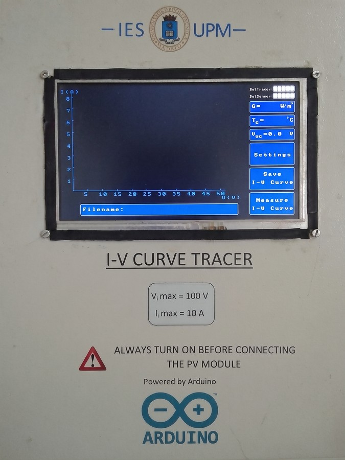
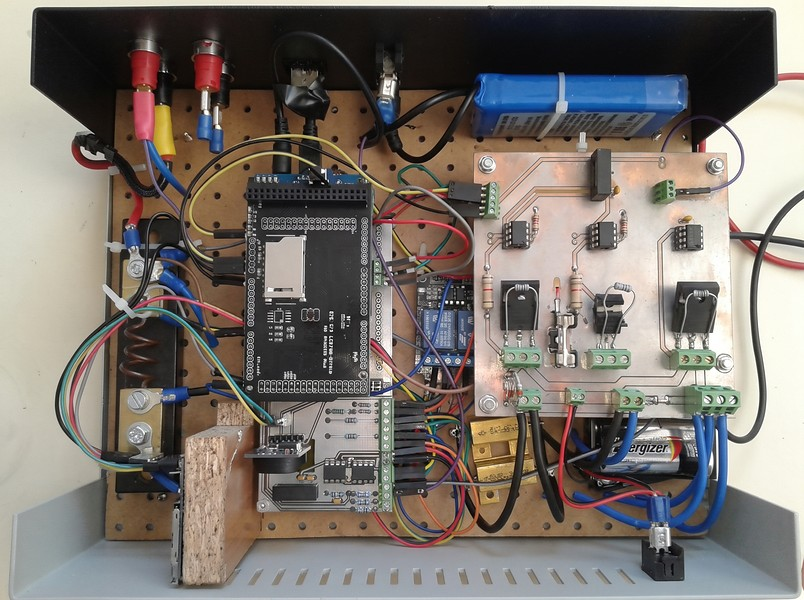

The I-V Curve Tracer
This device is the main element of the system as it is the one that actually performs the measurements in the desired panel, makes the calculations required to extrapolate the curve to STC conditions and stores the data. But it's not limited to that. The tracer uses a capacitive load to measure the current and voltage of a desired PV module to plot its I-V curve.
Functional requirements
As with the PV reference, I had to establish the minimum functional requirements the device had to meet. The proposed device must:
- Support a maximum voltage of 100 V. This limits the Voc of the PV modules that can be measured, and it's a critical factor when sizing the capacitive load.
- Support a maximum current of 10 A. This limits the Isc of the PV modules that can be measured and it's a critical factor when sizing the components of the power circuit, such as the fuses.
- Measure the open-circuit voltage value of the desired PV module.
- Measure the short-circuit current value of the desired PV module.
- Be able to receive the incoming data of the PV reference sensor. As explained, the PV reference sends the data using radio signals. This is done using a wireless shield.
- Be able to make calculations of the extrapolation of the I-V curve.
- Be an autonomous device, with its own power source.
- Be able to store all the data measured, as well as the calculated values. This is done with an SD card.
- Be able to log the time and date of the measurements. This is done with a real-time clock.
- Minimize the energy consumption, to increase the lifetime.
- Provide accurate, precise and repeatable measurement results.
- Be small in size.
- Be light in weight.
- Be low in cost.
- Be safe to use. In the PV reference the magnitudes used were really low so there is no risk, but in this case 100 V and 10 A can be dangerous. This affects the insulation of the components.
- Include the entire required elements in an enclosure that protects them from the environment and possible accidents.
Although it was not initially a requirement, soon after development started I realized that the addition of a touch screen as a display and input device was really an important feature. As a result it was finally added to the device. This is important to understand some of the decisions made and its consequences because for example the addition of the display is a huge increase in the power consumption of the whole device.
Hardware components
This section of the document aims to list and describe the elements used in the design of the I-V curve tracer. The components used are:
- A calibrated shunt resistor. Required to turn the short-circuit current of the PV module into a voltage difference signal that can be measured on the Arduino ADC. In this case the relation of the shunt resistor was 10 A = 60 mV.
- An Arduino Due board.
- A small PCB compatible with the Arduino board. This PCB is used to hold some of the signal circuits like the voltage divider of the PV module, the instrumentation amplifier for the current of the PV module, an auxiliary voltage divider to measure the voltage of the capacitors, and PCB connectors required for wiring.
- Two small customized prototype boards for wiring the RTC to the SPI bus.
- An Arduino-compatible wireless shield. Used to receive the measurements from the PV reference sensor using radio signals under the ZigBee protocol. It includes an XBee antenna.
- An adapter PCB for the TFT LCD touchscreen for the Arduino Due board. The TFT LCD touchscreen, with an SD card slot.
- A lithium-ion battery, used as the main power supply for all of the electronics. It uses 12 V and has a rated capacity of 4800 mAh. It is exactly the same model as the battery used in the PV reference sensor and the capacity test showed a similar value of 3200 mAh. It also includes its own charging device.
- An external SD card storage device.
- An accurate real-time clock (DS3231).
- A capacitive load, made out of two capacitors EPCOS SIKOREL 100 V, 4700 µF, in parallel configuration.
- A large power-circuit PCB that holds the three main power circuits and their signal circuits. This includes the discharge circuit, the negative pre-charge circuit, the measurement circuit, and all the logic used to activate them.
- Two external 47 Ω resistors, used to dissipate the energy of the capacitive load under the discharge circuit with its proper heat sinks.
- A battery holder, to keep the two batteries used for the negative pre-charge fixed.
- An on-off switch, a push button, wires, connectors, banana plugs.
After the good results and capabilities of the Arduino UNO in the PV reference sensor, I decided to go one step further by adding a TFT LCD touchscreen to the I-V curve tracer. One of the implications of introducing this element was the requirement of a more powerful board such as the Arduino Mega or the Arduino Due. In the end I chose the Arduino Due because its ADC has 12 bits of resolution, instead of the 10 bits of the Mega.

